Koka, Shiga: things to do, food and stays
Koka · Shiga
Koka
Highlighted on the Shiga map.

Stay
SHIGARAKI SAUNA

SHIGARAKI SAUNA
Inn in Shigaraki, Koka with a sauna.
THE ROSE VILLAGE
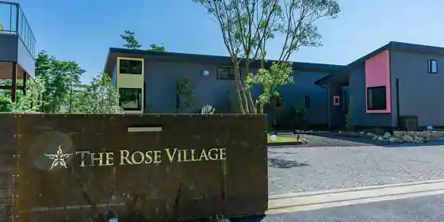
THE ROSE VILLAGE
Inn in Shigaraki, Koka with a sauna and a quiet countryside setting.
大河原温泉 かもしか荘
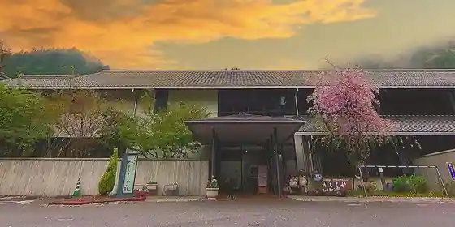
Ogawara Onsen Kamoshika So
Inn at Ogawara Onsen in Tsuchiyama, Koka with kaiseki dinners.
欅の宿 縁
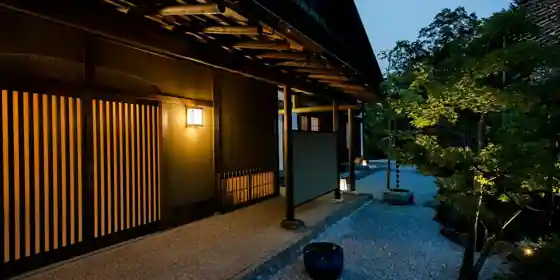
Keyaki No Yado Heri
Inn in Shigaraki, Koka with one group per day and a sauna.
ホテルルートイン甲賀水口 -国道1号-
Hotel Route Inn Koka Mizuguchi - Kokudo 1 Go
Hotel in Mizuguchi, Koka with a large communal bath; 9-minute drive from Mikumo Station.
あや乃旅館
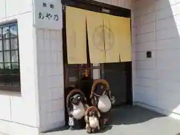
Aya No Ryokan
Ryokan inn in Mizuguchi, Koka with business travelers and long stays.
ホテル ニューミフク
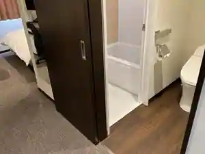
Hotel Nyumifuku
ホテル古城
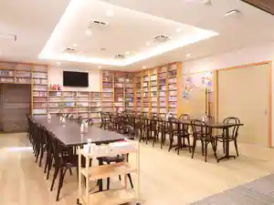
Hotel Kojo
Hotel in Mizuguchi, Koka with business travelers.
水口センチュリーホテル
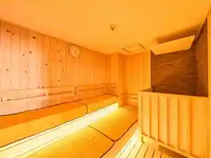
Mizuguchi Senchuri Hotel
Hotel in Mizuguchi, Koka with breakfast available and parking.
ホテルルートイン甲賀水口
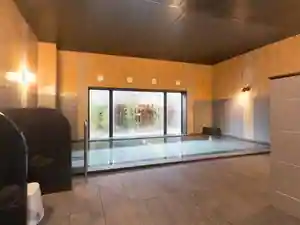
Hotel Route Inn Koka Mizuguchi
Hotel in Mizuguchi, Koka with buffet meals and breakfast available.
ＰＢ ＳＴＡＹ 甲南
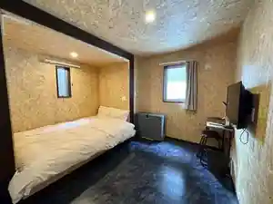
PB STAY Konan
甲賀忍びの宿 宮乃温泉
Koka Shinobi No Yado Miya No Onsen
Inn at Miyano Onsen in Konan, Koka.
Dining
生粉打 作美

Nama Kona Da Sakumi
レストラン 牛石
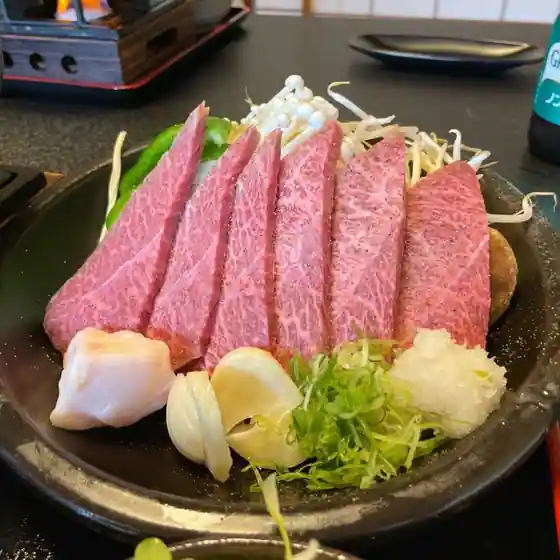
Restaurant Ushi Ishi
蕎麦 市のせ
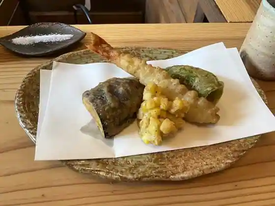
Soba Shi Nose
宇奈月
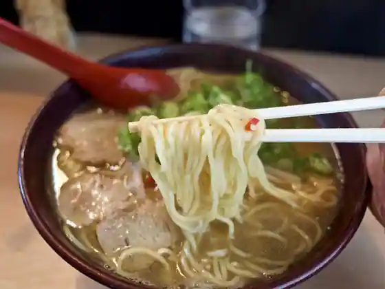
Unazuki
手打ちそばと朝宮茶の店 黒田園
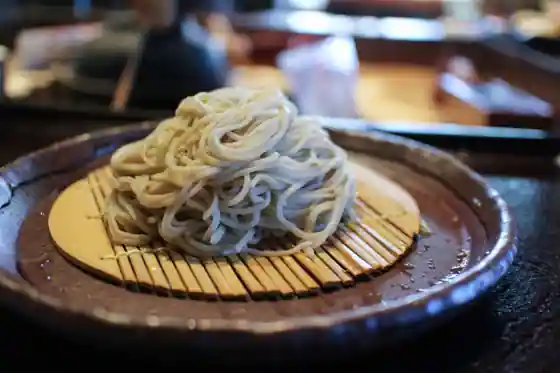
Teuchi Chisobato Asa Miya Cha No Kuroda Sono
Gallery & Cafe ENSOU
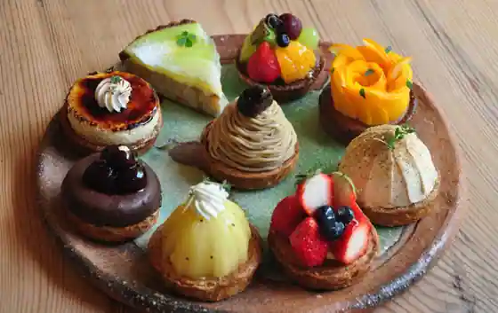
Gallery & Cafe ENSOU
森のcafe
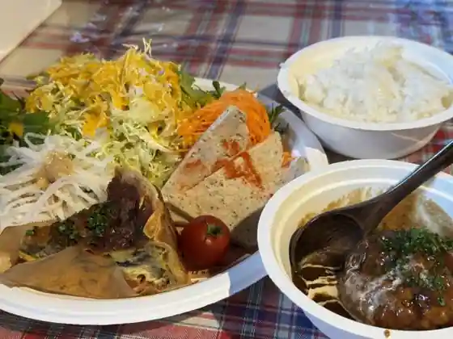
Mori No cafe
のぼり窯カフェ
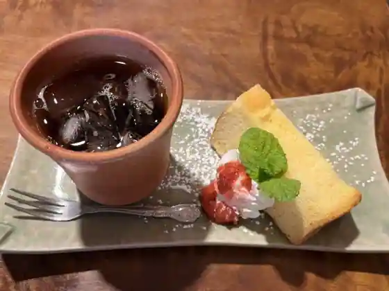
Nobori Kama Cafe
釜炊近江米 銀俵
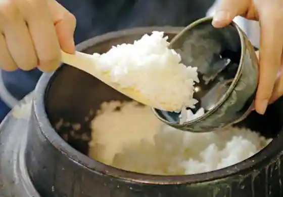
Kama Sui Omi Kome Gin Tawara
TORASARU
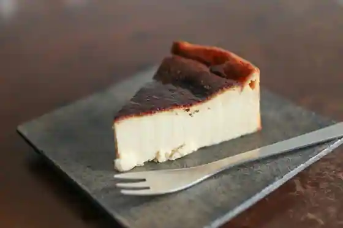
TORASARU
お茶の洞之園
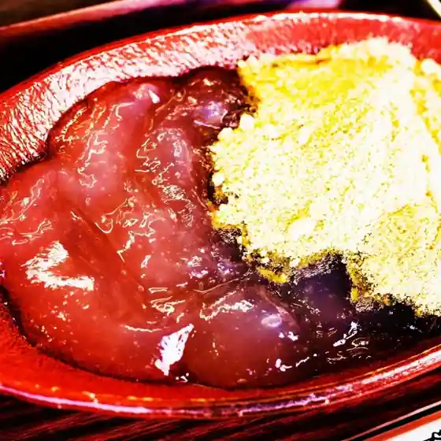
O Cha No Hora Yuki Sono
水口寿志亭 市場の食堂
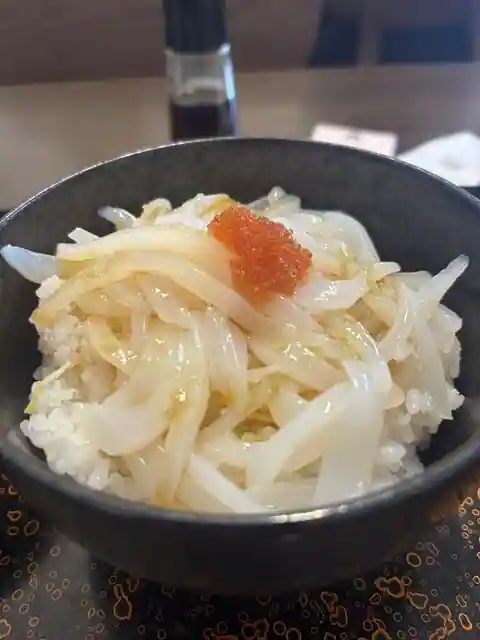
Mizuguchi Hisashi Tei Shijo No Shokudo
湖南飯店
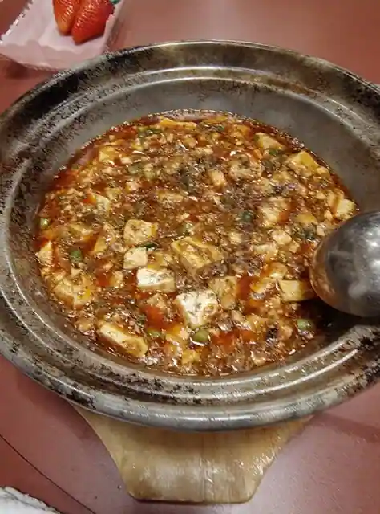
Konan Meshi
松茸屋 魚松 信楽店
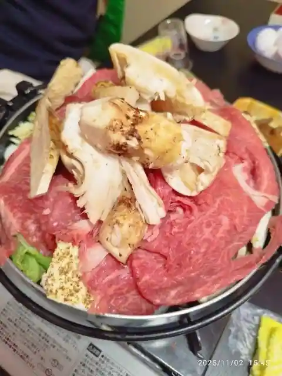
Matsutake Ya Sakana Matsu Shigaraki
松茸屋 魚松 本店
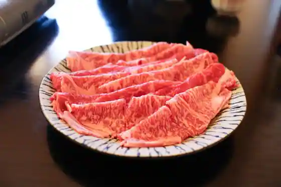
Matsutake Ya Sakana Matsu Hon
狸家分福
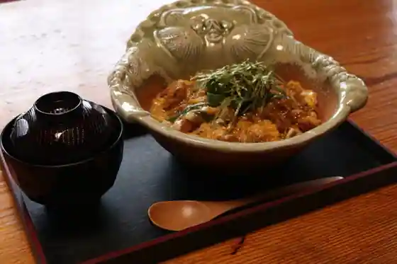
Tanuki Ie Bunpuku
近江スエヒロダイニング ザ ビーフ 土山SA店
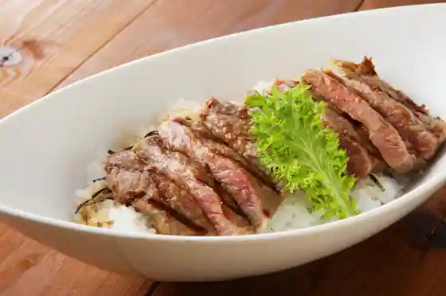
Omi Suehiro Dining Za Bifu Tsuchiyama SA
WITH TEA
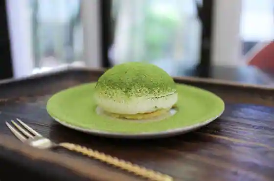
WITH TEA
亀楽屋
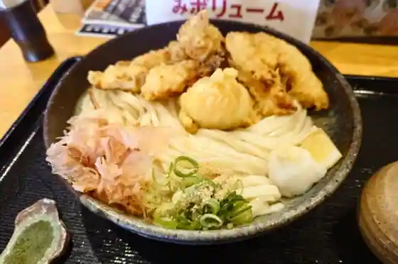
Kame Gakuya
道の駅 あいの土山
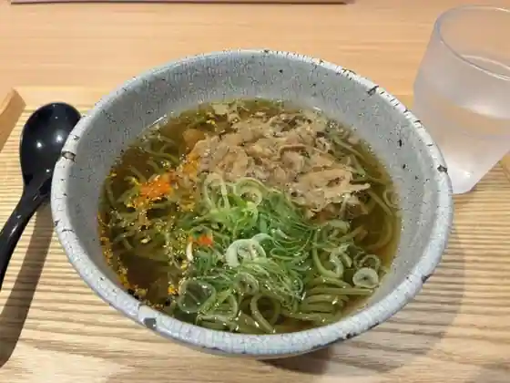
Michi No Eki Aino Tsuchiyama
山とおむすび 銀月舎
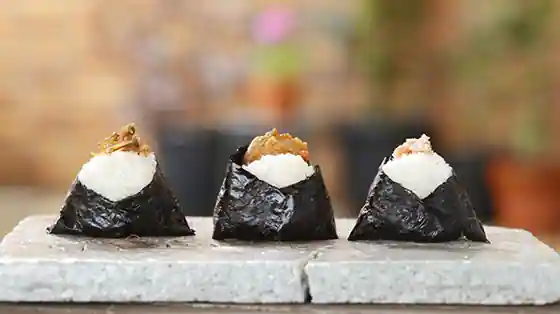
Yama Tomusubi Gingetsu Sha
ウルーウール
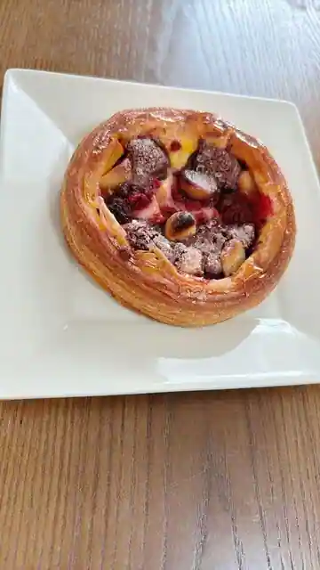
Uruuru
喫茶所 ソラノ珈琲 水口店
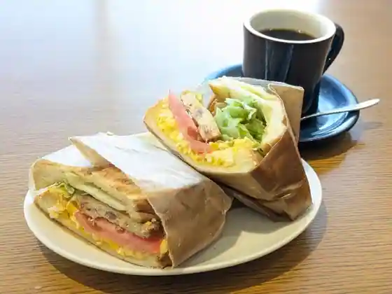
Kissa Tokoro Sorano Coffee Mizuguchi
まんぷく食堂
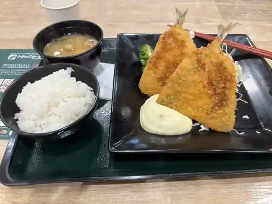
Manpuku Shokudo
Sights
JR Koka Eki no Torikkuato

Shomyo Tera

Rokkaku Do

Kunugi Nodera (Ichii no Kannon Sama)

Kokoro Mitsudera
Tarumi Saio Hayamiya Ato
Hono no Bi Tori
Koka Folk History Museum
Sen Zendera Ato Magai Hotoke
Shigaraki to En Tanuki Village
Mizuguchi Senchurii Hotel
Yasaka Shrine
Yagawa Shrine
Hayamiya Dai Chaen
Nishi Sakae Tera
Mitokoro Shrine
Kurotaki Yugyo Ba
Shu to En
Shingu Shrine (Koka)
Ai no Mori Fureai Park Aoni Dam Ekobarei
Ayukawa no Sembonzakura
Koshin Yamahiro Toku Tera
Hinoki O Shrine
Yokota Watari Joyato
Mizuguchi Yado
Koka Hito Machi Kaido Koryu Kan
Myon Tera
Tsuchiyama Service Area
Ogawa Castle Ruins
Koka Village Ninjutsu Village
Koka Ichigo Hausu
Iwao Yama (Iki Sho Tera)
Ogama
Mizuguchi Yado Honjin Ato
Minakuchi Kodomo Forest
Hinoki O Tera
Narita Ranch
Shiono Onsen
Hando Shrine
Tsuchiyama Folk History Museum
Amida Tera (Koka)
Taraokantorii Club
Kashiwagi Shrine
Soja Shrine
Shigaraki Kogen Tetsudo
Takama Mizube Park
Keimei Falls
Senchuriigorufu Club
Takikawa Castle Ruins
Tsuchiyama Yado Honjin Ato
Mizuguchi Supotsu Forest
Kanko Infomeshon Center Koka Ryu Riaru Ninja Kan
Bi Fuku Shuzo
Tokaido Tenma Kan
Daiyamondo Shiga
Ta Village Shrine
Fujie Shrine
Shingu Shrine
Mizuguchi Folk History Museum
Daitoku Tera
Togei Experience
Koka Ryu Ninjutsu Residence
Shiga Safari Museum
Shiga Prefectural Togei Forest
Kamamoto Sansaku Michi
Seiryo Tera (Koka)
Suzuka Sukai Line
Bannin Ko Joyato
Yamada Ranch
Oike Tera
Myo Tera
Tama Katsura Tera
Tokaido Tenma Kan
JR Konan Eki
Kyu Mizuguchi Library
Mizuguchi Shrine
Shigaraki Kogen Tetsudo Shigaraki Eki
Jofuku Tera
Ohara Castle Ruins
Misuji Falls
Hando Tera
Aburahi Shrine
Shigaraki Tanuki Onsen Ogawa Tei
Mizuguchi Teku no Su Farm
Shigaraki Kyuseki (Koka Jiseki)
Sawa Yoshiyuki Se Taiken Kan
Hatake no Shidare Sakura
Shigaraki Dento Sangyo Hall
Kasayama Shrine
Mizuguchi Kyokai Kaido Monchu
Chofuku Tera
Kusuri Gakushu Kan
Mizuguchi Yado Higashi Mitsuke Ato
MIHO MUSEUM
Ogiya Densho Bunka Kan
Himezuka
Kafuka Yume Forest
Mizuguchi Castle Ruins (Mizuguchi Shiro Museum)
Ichiri Tsuka
Kojo Yama (Mizuguchi Okayama Castle Ruins)
Hotel Reikuvira
Ayano Tenmangu Shrine
Wada Castle Ruins
Roadside Station Ai no Tsuchiyama
Otori Shrine
ROSE GOLF CLUB
Senkoji
Joko Tera
Soma Kawa Tsutsumi
Yama Village Shrine
Ooka Tera
Sei Fuku Tera (Koka)
Gan Takashi Tera
Senpuku Tera
JR Kibukawa Eki
Ryufuku Tera
JR Aburahi Eki
Omitetsudo Mizuguchi Eki